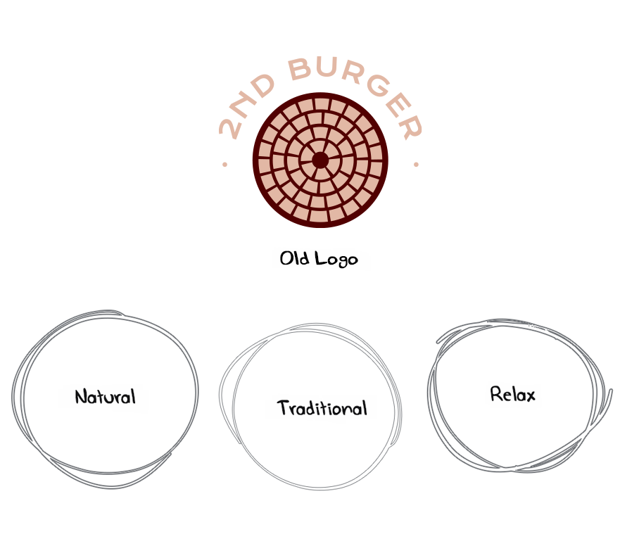

The Story
The shop owner who is South Africans Tribe people live in UK, started as a hamburger restaurant at Arsenal Riverside after moving to the London. His own hand-crafted patties with south africa tribe spices marinate methods. The client needed a design brand identity to convey the pleasurable experience between traditional rustic tasty and community to costumers.
Brand Value

chatShop Owner :
" Actually, burger sauces and spices is a key, that made by my country cooking method. hmmm, I wanna say open at Night hour only..... Compared with other competing burger house, this may be our difference."
Logotype
The South Africa Tribe Mask is one of the most important elements. The fluidity of the line movements served as a great inspiration when designing the brand's logo. So, The main idea of the logo was mixing tribe mask and burger outline that creates casual and fluid hand-sketching outline, that evokes the brand's natural, organic and care-free ethos, while still enjoy what they love burger.
The brand name "2nd" comes from the expression "Start at night of one day". I wanted to reflect the night time as a direct reference to the initial concept. The connection of letters of "2nd" to each other that merged as one symbol with bold font high contrast and legibility is perfect for it. All these elements result in a unique, and fresh brand that reflects the project’s values.
Typography and Color Palette
The color palette wishes to convey "Time" as a direct reference to the initial concept: timeless black-and-white colour combination portrays it’s presented night and day transitions, and night blue as sub-colors. Lastly, Kraft texture which are applied to mixing the brand visual element.
Visual Element
The five type burger ingredients symbol are the elements that supports the 2nd Burger as a whole. Capturing the ingredients and tradition of the south africa spices of the product was essential when establishing the brand visual by hand sketch of bold symbol, this illustration is also an iconography attached to the brand. That creates a sense of coherence, confidence and in the same time to create a unique identity.
Brand
Material
Instagram
Campaigns